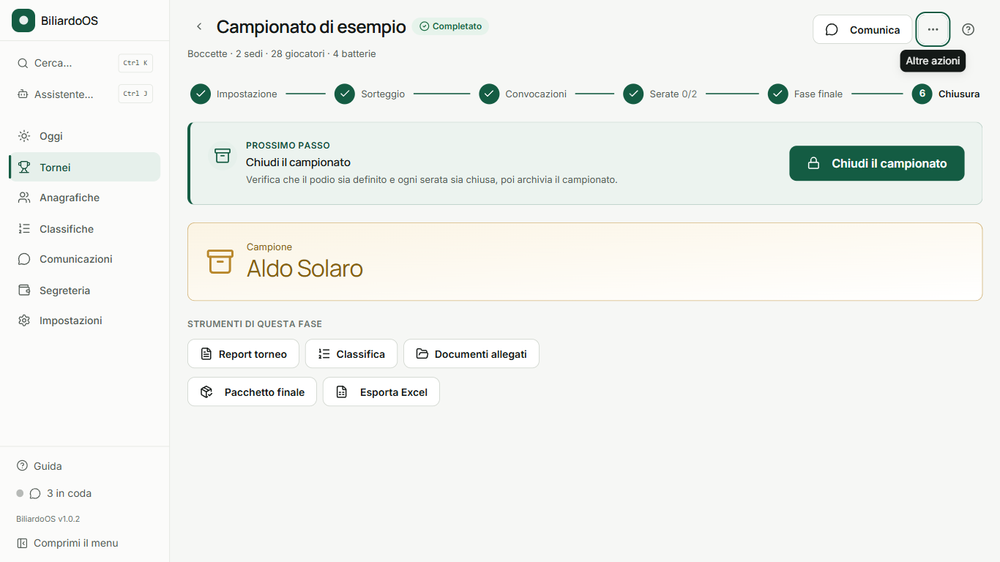

⬇️ Scarica BiliardoOS
Installazione
- Apri il file BiliardoOS-Setup appena scaricato.
- Se Windows mostra "Windows ha protetto il PC" (SmartScreen), clicca Ulteriori informazioni e poi Esegui comunque: il programma è gratuito ma non ha una firma digitale a pagamento.
- Al primo avvio parte una configurazione guidata. Gli aggiornamenti successivi arrivano da soli.
Cosa fa
- Sorteggio delle batterie con regole (nessuno gioca nel proprio bar, disponibilità, teste di serie) e verbale.
- Tagliandi di convocazione (4 per A4 o singoli) e invio a bar e giocatori via WhatsApp ed email.
- Appello, risultati, fase finale, classifiche e stagioni.
- Assistente AI che gira sul tuo PC; i dati restano sul tuo computer.
